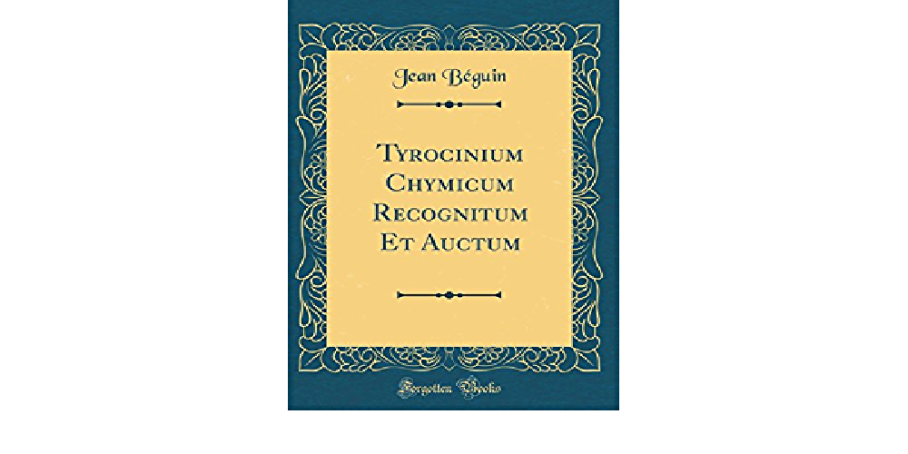
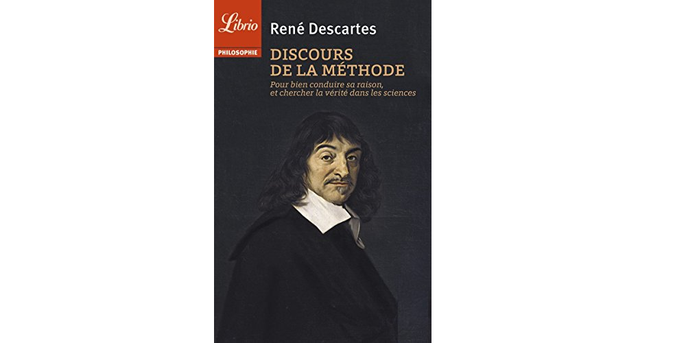
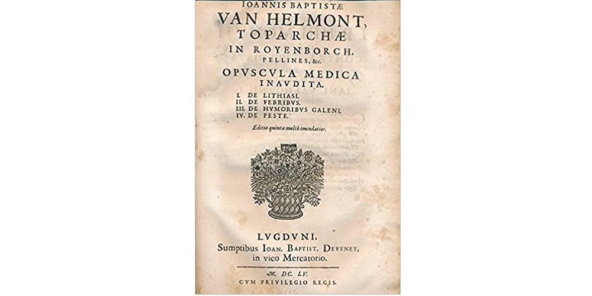
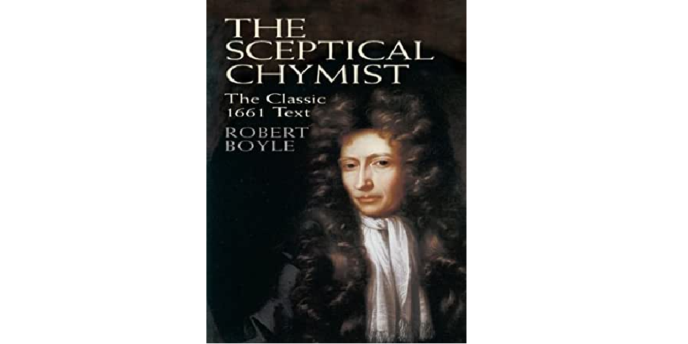

Jean Beguin publica Tyrocinium Chymicum, uno de los primeros trabajos escritos sobre química, en donde redacta la primera ecuación química de la Historia
René Descartes publica la obra Discours de la méthode, que contiene un esquema del método científico.
Se publica de forma póstuma el libro Ortus medicinae del flamenco Jan Baptista van Helmont, la cual es referida por algunos como una obra notable de transición entre la alquimia y la química, además de ser una importante influencia para Robert Boyle. El escrito contiene los resultados de numerosos experimentos y establece una de las primeras versiones de la ley de conservación de la materia.
Robert Boyle publica The Sceptical Chymist, un tratado que trata sobre las diferencias entre la química y la alquimia. Este contiene asimismo algunas de las primeras nociones sobre los átomos, las moléculas y las reacciones químicas, con lo que marca el inicio de la historia de la química moderna.
